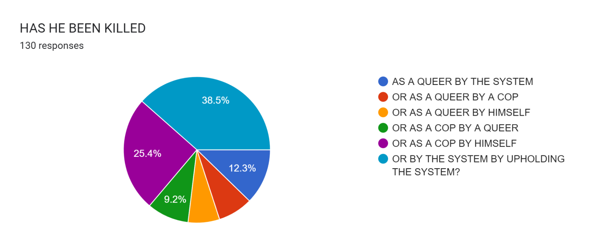

this is where im gonna write all the random shit i think that isnt really coherent enough to be a journal. click the things above to go to sections
i stole every aspect of this from incessantpain so go check him out
i dont really have more to say but when my page isnt long enough for a scrollbar to appear the navbar is pushed slightly less to the left making it look wonky going between pages
Connection terminated. I'm sorry to interrupt you Elizabeth, if you still even remember that name. But I'm afraid you've been misinformed. You are not here to receive a gift, nor have you been called here by the individual you assume. Although you have indeed been called. You have all been called here. Into a labyrinth of sounds and smells, misdirection and misfortune. A labyrinth with no exit, a maze with no prize. You don't even realize that you are trapped. Your lust for blood has driven you in endless circles, chasing the cries of children in some unseen chamber, always seeming so near, yet somehow out of reach. But you will never find them, none of you will. This is where your story ends. And to you, my brave volunteer, who somehow found this job listing not intended for you. Although there was a way out planned for you, I have a feeling that's not what you want. I have a feeling that you are right where you want to be. I am remaining as well, I am nearby. This place will not be remembered, and the memory of everything that started this can finally begin to fade away. As the agony of every tragedy should. And to you monsters trapped in the corridors: Be still and give up your spirits, they don't belong to you. For most of you, I believe there is peace and perhaps more waiting for you after the smoke clears. Although, for one of you, the darkest pit of Hell has opened to swallow you whole, so don't keep the devil waiting, old friend. My daughter, if you can hear me, I knew you would return as well. It's in your nature to protect the innocent. I'm sorry that on that day, the day you were shut out and left to die, no one was there to lift you up into their arms the way you lifted others into yours. And then, what became of you. I should have known you wouldn't be content to disappear, not my daughter. I couldn't save you then, so let me save you now. It's time to rest. For you, and for those you have carried in your arms. This ends for all of us. End communication.
2024
12/08/24
i consider changing the layout like 60 times a day whats going on. honestly not having all the text squeezed into the center of the screen in a little box might make me stnad out more from the other neocities type webistes idk. anyways im meant to be studying what the fuck is going on with my life.
11/08/24
i keep seeing a sick site and wanting to completely overhaul mine to look like theirs because it looks "too generic". idk if thats the case, the main layout of most things has stayed the same since ~2021 when i used a w3school tutorial to get it done so i suppose it could look generic but i think its fermented enough to have formed its own kind of identity?? idk, i keep feeling like the navbar isnt bullshit enough but in the same vein the top of the screen horizontal navbar has been adopted everywhere for a reason i guess. though i cant lie i feel a little jealous when i see melps' or incessantpain's cool ass navigation menus.
11/08/24

10/08/24

10/08/24

06/08/24
im so fucking sick of needing to sign up to every website. like this is why i need 2fa on everything because passwords dont matter anymore because if i want to do anything at all i gotta sign up, wanna crop this image online? sign up!! want to view this document? sign up!! want to scan an image for ai? sign up!! so now, every password i have gets breached twice a week because they useless fucking sites have no idea how to safely store information. greatest ad for password managers ive ever seen. fuck you isitai.com, ill start scanning shit with my eyes from here on out.
05/08/24
teacher died at school rest in peace my guy
02/08/24
i missed the wizard101 free week *sigh*
26/07/24
forgot to ramble in a month too busy eating ass and sucking toes sorry. also why do so many of these geocity clone sites have manifestos, they must wanna be the unibomber so bad. its fine but like im evil and hate everything so when i see 500 people write the same fucking 10 page long manifesto am i meant to not be a dick?? these are the hard hitting questions. anyone whos using neocities or alternatives (nekoweb and such) already know that the internet has become a shithole digital version of times square but with isis executions instead of homeless people pissing on the sidewalk. screaming into an endless circle jerk isnt gonna actually change anytihng. this isnt to say that i know the real answer to the modern internet being "bad" because there really isnt an answer. as the internet became not something just for nerds, websites that were more simplified and easier for the average person to use naturally became the most popular, and once youre the most popular and have as little competition as many websites you can just do whatever the fuck you want. so unless youre elon level wealthy you guys are really not gonna be able to do shit about it.
29/06/24

real comment about the debate
28/06/24

my autism has reached a peak
09/06/24
was watching eric andre on the bus and i laughed so much i made the people around me uncomfortable.
06/06/24
distopian ass instructional video but i really liked it
05/06/24
wtf i just found out larry king died. 3 years late.
04/06/24
i saw this silly google form today. idk if it has some deep meaning but if it does i cant see it. https://docs.google.com/forms/d/1F5wYdTypdZKw_9lsg6REHnJV5r5faWiwLseVKyA1k60/viewform
03/06/24
penut butter m&ms dont taste very good
29/05/24
i just had a dream that this guy i know commited a fnaf type murder and spent the rest of the dream trying to kill me like getting on my bus and shit it was a lot more scary in the dream
29/05/24
ive spent so long getting skyrim mods to work jesus christ
22/05/24
pauls wife died :(
21/05/24
my comment section is proof you cant trust fnf fans they are insane people
20/05/24
https://www.youtube.com/watch?v=pqN3RpopZQ0 why must the glowies take away everything i love.
19/05/24
femtanyl really carrying me through this whole studying thing
19/05/24
got my first comment!! it was by bitch and it said tyytfujyugj. god damn masterpiece. anyways fuck you whoever invented webps becuase ive spent 60% of my life converting webps to pngs as no website supports them bruh.
19/05/24
i think im going off that rails but i swear i just saw an irl goblin sighting outside my window. it was like a blur of green outside the window.
17/05/24
https://www.logitech.com/en-us/products/mice/signature-ai-edition-m750-wireless-mouse.html why do companies just put ai in everything. i dont want a shitty ai mouse i just want a good mouse.
17/05/24

wtf why is nick jonas here
16/05/24
im going autistic over here
16/05/24

9000 hours, my phone battery has gone to shit.
15/05/24
apparently cavemen were really short which i think is really funny. like being tall was being 5'7.
14/05/24

free wizard 101 membership. im regaining my youth. the voice acting is shockingly good.
10/05/24

i really like youtube comments
08/05/24
https://edition.cnn.com/2024/05/07/entertainment/drake-shooting-toronto-home/index.html they killed drake!!
07/05/24

i beat dash!! (im so good at this game)
06/05/24
this is not meet the grahams
04/05/24

i made donuts!! this is the best one and it took me 7 hours.
03/05/24

i thought this was extremely funny